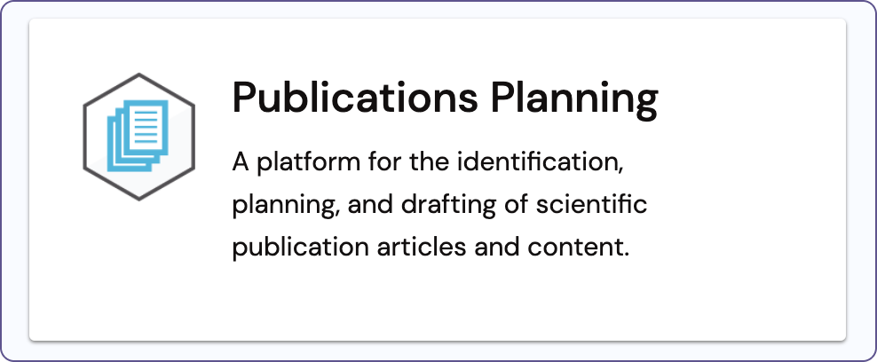

Technical Writer
February 2022 – March 2022
Google Docs, Microsoft Word, Salesforce, Snagit
Komodo Publications Planning (KPP) is Komodo Health’s Salesforce solution for helping teams plan and draft scientific articles as well as budget and coordinate the submission of publication content to congresses and journals. Within the first few months of joining Komodo Health (“Komodo”) as a technical writer, I was given the opportunity to create a KPP user guide for one of our biggest customers.
At the time, KPP was not yet live and did not have any existing written documentation aside from several training materials. Additionally, our technical writing team had traditionally only delivered administrative guides on our external help site for our Salesforce products, not user guides. However, we knew that this project would be a great way for us to increase our exposure within the company and expand the type of work that we do. I expressed interest when my manager informed us about this opportunity, and my teammates agreed to let me take ownership of the project.
Once I stepped up to create the user guide, I was invited to several meetings to help me better understand the project objective, the key stakeholders, and the product itself. I spent most of the first two weeks attending training sessions, completing the accompanying assignments, and drafting out an initial version of the user guide.
Aside from the speed at which I had to learn both the product as well as the overall process of how scientific content is ideated, written, and published, deciding the information architecture for the user guide was the most challenging part of this project.
I was primarily conflicted between organizing the content in either features or tasks. I was conflicted because the training sessions that I was attending presented the information based on the step-by-step tasks that need to be completed throughout the publication planning process, including, but not limited to:
The structure of the training sessions made a lot of sense, but because the clients themselves would get similar, if not the same, trainings as I did, I was hesitant on producing a user guide that would contain redundant information.
With this concern in mind, I started my first draft with a feature-based approach, using the main components of the product as section titles, such as:
Yet, the more I wrote, the more I felt that the content of my draft did not flow well. Because a large portion of the publications planning process in KPP relates to the annual plan that organizes the client’s budget and body of work for a single year, I noticed I was creating subsections within “Annual Plans” for topics that should come after my “Documents” section, not before. And when thinking about my target audience, I worried that they would constantly need to flip or scroll around in the user guide to find the information that they need for the specific step they are in when using the KPP product.
I questioned my decision to organize the user guide based on features and components and created an entirely new document based on tasks and the actual publication planning timeline. I then asked my manager, a former technical writer herself, to review both and give me some feedback on which approach made more sense.
After we both agreed that the task-based approach seemed better given the user flow of things, I continued working on my new draft. I was heavily relying on the training sessions to organize my content as I had initially feared, but I knew I had a reason for the way I was writing. And eventually, as I worked my way through all of the training sessions, I still ended up creating a section at the beginning to introduce the major KPP components that were frequently reused or referenced. Ultimately, then, the information architecture of the user guide managed to incorporate both a feature-based and task-based approach with an emphasis on the latter.
As I was drafting the user guide, the Director of Quality, one of the key stakeholders of the project, occasionally came into my document as both a subject matter expert (SME) and a peer reviewer to provide feedback on what I had written so far. I accepted most of her feedback, but also pushed back on others, such as those on diction.
For one, when she suggested I replace the phrase “Please reference [table/figure/section]” to “See [table/figure/section]”, I advocated against using “See” because our team does our best to avoid terms that are ableist or potentially ableist. She agreed to keep my original word choice.
Another one of her comments pertained to my way of referencing Salesforce entities, as KPP is built on top of Salesforce; she wanted to ensure that I was not using terminology that was either too technical or may have a different meaning for the users (e.g., “widgets”). Likewise, I wanted to ensure that I was not assuming any Salesforce knowledge of the users (e.g., “highlights panel”). I worked with her to finalize which Salesforce entities I was referring to as “tabs”, “subtabs”, “components”, and “sections” and ended up creating another section in the user guide titled “Basic navigation” to break down some of the Salesforce entities.
The review process for my work was an ongoing and iterative process, as the internal stakeholders frequently reviewed and commented on my drafts at the same time that I was writing. Aside from the examples mentioned above about specific changes I was asked to make, there were also several instances where I needed to insert additional sections on content that was not mentioned in any of the training sessions. For those, I simply had to ask the SMEs to provide me with the information that I needed so I could consolidate and polish the content that was to be delivered. Because of this, I felt even more assured that my user guide would supplement, rather than duplicate, the training sessions.
I am very grateful to have had this opportunity to create an exhaustive user guide for a big client. I am especially grateful to my manager and teammates who agreed to let me take on this opportunity even knowing I was new to the company, the team, the role, and the product. Through this opportunity, I learned the importance of having a rationale for each word, sentence, paragraph, and section that I write; technical writing is a user-focused craft, and if you can’t explain the reasoning to fellow teammates and stakeholders, you can’t be sure your audience will understand the content you deliver.
Upon submitting the user guide, I received high-praise from the Director of Quality in our company-wide praise channel. This project was challenging and rewarding, and I look forward to more opportunities like it.